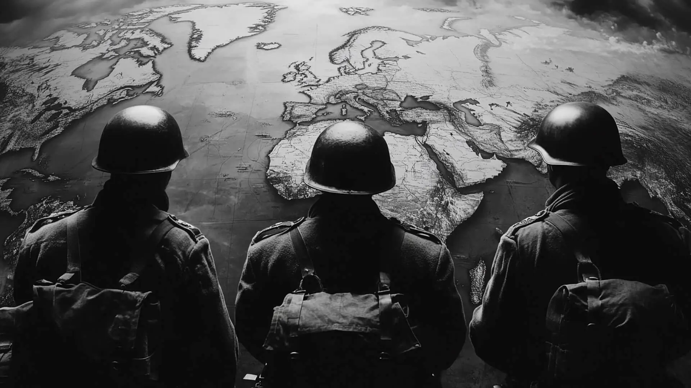
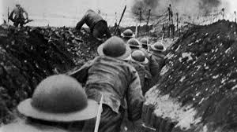
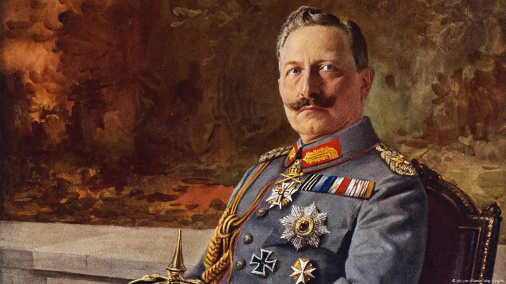
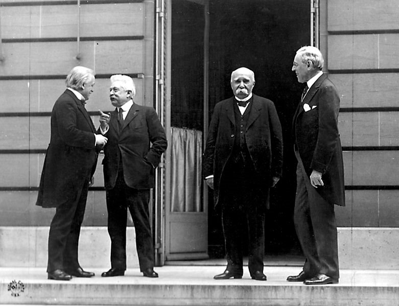

La primera guerra mundial se llevo a cabo en Europa, que también se llego a conocer como "La Gran Guerra" fue un conflicto que se desarrollo entre los años 1914 y 1918, donde los anfritiones eran divididos entre dos bandos, uno de ellos se llamaba "Potencias centrales", conformada por Austria - Hungria, Alemania, y el Imperio otomano, mientras que el otro bando era llamado "Aliados", era conformado por Francia, Reino unido, Rusia y Estados Unidos. Se caracterizó por una guerra de trincheras, nuevos avances tecnológicos y enormes pérdidas humanas.
La Primera Guerra Mundial marcó el primer gran conflicto internacional del siglo XX. El asesinato del archiduque Francisco Fernando, heredero de la corona austro-húngara, y de su esposa, la archiduquesa Sofía, en Sarajevo el 28 de junio de 1914, dio inicio a las hostilidades, que comenzaron en agosto de 1914, y continuaron en varios frentes durante los cuatro años siguientes. Casas a lo largo del río Meuse que resultaron dañadas durante la batalla de Verdun en diciembre de 1916. La batalla fue una de las más largas y mortíferas de la Primera Guerra Mundial. © IWM (Q 67594) Durante la Primera Guerra Mundial, las Potencias de la Entente -- Gran Bretaña, Francia, Serbia y la Rusia Imperial (a las que más tarde se unieron Italia, Grecia, Portugal, Rumania y Estados Unidos) -- lucharon contra las Potencias Centrales: Alemania y Austria-Hungría (a las que más tarde se incorporaron la Turquía Otomana y Bulgaria). El entusiasmo inicial de todas las partes respecto a una victoria rápida y decisiva se desvaneció cuando la guerra se empantanó en un punto muerto de costosas batallas y guerra de trincheras, particularmente en el frente occidental. El sistema de trincheras y fortificaciones en el oeste se extendió en su punto máximo a 475 millas (764 km), aproximadamente desde el Mar del Norte hasta la frontera suiza, y definieron la guerra para la mayoría de los combatientes norteamericanos y de Europa Occidental. La vasta extensión del frente oriental impedía una guerra de trincheras a gran escala, pero la escala del conflicto era equivalente a la del frente occidental. También hubo intensos combates en el norte de Italia, en los Balcanes y en la Turquía otomana. Los combates tuvieron lugar en el mar y, por primera vez, en el aire. En abril de 1917, se produjo un cambio decisivo en las hostilidades cuando la política de guerra submarina irrestricta de Alemania sacó a Estados Unidos del aislacionismo y lo llevó al centro del conflicto. Las nuevas tropas y el nuevo material de la Fuerza Expedicionaria Estadounidense (American Expeditionary Force, AEF) bajo el mando del General John J. Pershing, junto con el bloqueo en constante aumento de los puertos alemanes, a la larga ayudaron a cambiar el equilibrio del esfuerzo bélico a favor de la Entente. Apenas conseguida, esta ventaja para las fuerzas de la Entente fue compensada por los sucesos que tuvieron lugar en el teatro de operaciones oriental de la guerra. Desde comienzos de 1917, Rusia, una de las potencias principales de la Entente, había sufrido una gran agitación. En febrero de ese año, el mal manejo de la guerra por parte del gobierno zarista había contribuido a inspirar un levantamiento popular: la Revolución de Febrero. La revolución forzó la abdicación del zar Nicolás II y puso en el poder un Gobierno Provisional de facciones liberales y socialistas, que a fin de cuentas estaba bajo el mando del miembro del partido Socialista Revolucionario, Alexander Kerensky. Este breve experimento con la democracia pluralista fue caótico y, en los meses del verano, el continuo deterioro del esfuerzo bélico y una situación económica cada vez más calamitosa provocó disturbios por parte de los trabajadores, los soldados y los marinos rusos ("Los días de julio").
La guerra de trincheras es uno de los símbolos más representativos de la Primera Guerra Mundial. Esta fotografía muestra a las tropas británicas transportando tablones por encima de una trinchera de respaldo durante la noche, en la lucha por el frente occidental. Cambrai, Francia, 12 de enero de 1917. El 24 y 25 de octubre de 1917, las fuerzas bolcheviques (izquierda socialista) al mando de Vladimir Lenin tomaron los principales edificios del Gobierno y asaltaron el Palacio de Invierno y luego la sede del nuevo Gobierno en la capital de Rusia, Petrogrado (actual San Petersburgo). La "Gran Revolución Socialista de Octubre", el primer golpe marxista exitoso de la historia, desalojó al ineficaz Gobierno Provisional y finalmente estableció una República Socialista Soviética bajo la dirección de Lenin. Las radicales reformas sociales, políticas, económicas y agrarias del nuevo Estado soviético en los años de la posguerra inquietarían a los gobiernos democráticos occidentales que, temían tanto la expansión del comunismo por toda Europa, que estuvieron dispuestos a transigir o sosegar a regímenes de derecha (incluyendo a la Alemania nazi de Adolf Hitler) en las décadas de 1920 y 1930. Pero el efecto inmediato de la Revolución Rusa en el escenario europeo fue una brutal y prolongada guerra civil en tierras rusas (1917-1922) y la decisión de los líderes bolcheviques de hacer las paces por separado con la Alemania del Kaiser. Cuando las negociaciones fracasaron totalmente debido a las exigencias alemanas, el ejército alemán lanzó una ofensiva general en el frente oriental, que produjo el Tratado de Paz de Brest-Litovsk el 6 de marzo de 1918. Pese a los éxitos alemanes (sacar a la Rusia bolchevique de la guerra a fines del invierno de 1918 y llegar a las puertas de París durante el verano), los ejércitos de la Entente repelieron al ejército alemán en el río Marne. En los meses del verano y el otoño de 1918, avanzaron sostenidamente contra las líneas alemanas en el frente occidental ("Ofensiva de los cien días"). Las Potencias Centrales comenzaron a rendirse, comenzando con Bulgaria y el Imperio Otomano, en septiembre y octubre, respectivamente. El 3 de noviembre, las fuerzas austrohúngaras firmaron una tregua cerca de Padua, Italia. En Alemania, el amotinamiento de marinos de la armada en Kiel desencadenó una amplia revuelta en las ciudades costeras alemanas, y en las principales áreas municipales de Hannover, Frankfurt del Meno y Munich. Consejos de trabajadores y soldados, basados en el modelo soviético, iniciaron la llamada "Revolución alemana"; la primera "república de consejos" (Räterrepublik) fue establecida bajo la dirigencia del demócrata social independiente (USPD) Kurt Eisner en Bavaria. El sólido Partido Socialdemócrata de Alemania (SPD), bajo la dirigencia de Friedrich Ebert, veía a los consejos recientemente establecidos como un elemento desestabilizador, y abogaba, en su lugar, por las demandas de la opinión pública alemana de una reforma parlamentaria y paz. Tropas británicas apostadas en una antigua trinchera alemana después del retiro de las tropas de ese país a la línea de Hindenburg en el frente occidental durante la Primera Guerra Mundial. Esta fotografía muestra un puente sobre una trinchera alemana. Gommecourt, Francia, 1917.
El 9 de noviembre de 1918, en medio del descontento generalizado y tras haber sido abandonado por los comandantes del ejército alemán, el emperador (káiser) Guillermo II abdicó el trono alemán. Ese mismo día, el delegado del SPD Philipp Scheidemann proclamó la República de Alemania, con un gobierno provisional dirigido por Friedrich Ebert. Dos días más tarde, representantes alemanes, dirigidos por Matthias Erzberger del partido Centro Católico (Zentrum), se reunieron en un vagón en el Bosque de Compiègne con una delegación de las potencias victoriosas de la Entente al mando del Mariscal de Campo francés Ferdinand Foch, comandante general de las fuerzas de la Entente, y aceptaron los términos del armisticio. A las 11 de la mañana del 11 de noviembre (11/11) de 1918 cesaron los combates en el frente occidental. La "Gran Guerra", como la llamaron sus contemporáneos, había llegado a su fin, pero la enorme repercusión del conflicto en las esferas política, económica, social e internacional resonaría durante las décadas siguientes. La Primera Guerra Mundial representó una de las guerras más destructivas de la historia moderna. Como consecuencia de las hostilidades murieron casi diez millones de soldados, cifra que supera ampliamente la suma de las muertes de militares de todas las guerras de los cien años anteriores. Si bien es difícil determinar con precisión las estadísticas de las bajas, se calcula que 21 millones de hombres fueron heridos en combate. Las enormes pérdidas a ambos lados del conflicto, en parte, fueron el resultado de la introducción de nuevas armas, como la ametralladora y el gas, así como el hecho de que los jefes militares no adaptaron sus tácticas a la naturaleza crecientemente mecanizada de la guerra. La política de desgaste, particularmente en el frente occidental, les costó la vida a cientos de miles de soldados. El 1 de julio de 1916, la fecha en que se produjo la mayor pérdida de vidas en un solo día, en Somme sólo el ejército británico sufrió más de 57.000 bajas. Alemania y Rusia registraron la mayor cantidad de muertes de militares: aproximadamente 1.773.700 y 1.700.000, respectivamente. Francia perdió el 16% de sus fuerzas movilizadas, la tasa de mortalidad más alta en relación con las tropas desplegadas. Ningún organismo oficial llevó una cuenta minuciosa de las pérdidas de civiles durante los años de la guerra, pero los estudiosos afirman que 13 millones de no combatientes murieron como consecuencia directa o indirecta de las hostilidades. La mortalidad de las poblaciones de militares y civiles llegó al punto máximo al final de la guerra con el brote de la "gripe española", la más mortífera epidemia de influenza de toda la historia. Como consecuencia del conflicto, millones de personas fueron desarraigadas o desplazadas de sus hogares en Europa y Asia Menor. Las pérdidas industriales y de propiedades fueron catastróficas, especialmente en Francia y Bélgica.
Las principales causas o hechos que detonaron la primera guerra mundial fue el asesinato del archiduque Francisco Fernando de Austria en 1914. Este hecho desató una serie de acontecimientos que llevaron al conflicto.
-El asesinato del archiduque Francisco Fernando y su esposa, la archiduquesa Sofía, en Sarajevo
-El Imperio austrohúngaro declaró la guerra a Serbia el 28 de julio
-Rusia se movilizó contra el Imperio austrohúngaro
-Alemania, aliado de Austria-Hungría, le declaró la guerra a Rusia
-Reino Unido le declaró la guerra a Alemania, tras la invasión de Bélgica, con quien los británicos tenían acuerdos de protección
Además de las potencias querer demostrar superioridad ante las demas ya que tambien se basaba en avances tecnologicos, mejor estrategia, y tambien de el colonialismo.
Años antes de 1914, los sucesivos jefes del Estado Mayor alemán habían previsto que Alemania tendría que librar una guerra en dos frentes simultáneamente, contra Rusia en el este y Francia en el oeste, cuya fuerza combinada era numéricamente superior a la de las Potencias Centrales. El mayorHelmuth von Moltke , jefe del Estado Mayor alemán de 1858 a 1888, decidió que Alemania debía mantenerse inicialmente a la defensiva en el oeste y asestar un golpe devastador a las fuerzas avanzadas rusas antes de contraatacar el avance francés. Su sucesor inmediato,Alfred von Waldersee también creía en mantenerse a la defensiva en el oeste.Alfred, Graf von Schlieffen , quien sirvió como jefe del estado mayor general alemán de 1891 a 1905, adoptó una postura contraria, y fue el plan que desarrolló el que guiaría la estrategia inicial de Alemania en tiempos de guerra. Schlieffen se dio cuenta de que, al estallar la guerra, Rusia necesitaría seis semanas completas para movilizar y reunir sus vastos ejércitos, dada la inmensa campiña y población rusas, la escasez de la red ferroviaria y la ineficiencia de la burocracia gubernamental . Aprovechando este hecho, Schlieffen planeó adoptar inicialmente una postura puramente defensiva en el Frente Oriental con un número mínimo de tropas frente a los ejércitos rusos que se reunían lentamente. Alemania, en cambio, concentraría casi todas sus tropas en el oeste contra Francia y buscaría eludir las fortificaciones fronterizas francesas mediante una ofensiva a través de la neutral Bélgica al norte. Esta ofensiva se extendería hacia el oeste y luego hacia el sur a través del corazón del norte de Francia, capturando la capital y sacando a ese país de la guerra en pocas semanas. Después de haber ganado seguridad en el oeste, Alemania trasladaría sus tropas al este y destruiría la amenaza rusa con una concentración similar de fuerzas.
En el momento de su retiro en 1905, Schlieffen había elaborado un plan para un gran movimiento giratorio del ala derecha (norte) de los ejércitos alemanes no sólo a través del centro de Bélgica sino también, para eludir las fortalezas belgas deLieja yNamur en el valle del Mosa, a través de la parte más meridional de laPaíses Bajos . Con su ala derecha entrando en Francia cerca de Lille, los alemanes continuarían girando hacia el oeste hasta estar cerca del Canal de la Mancha; luego, girarían hacia el sur para cortar la línea de retirada de los ejércitos franceses desde la frontera oriental de Francia hacia el sur; y el arco más externo de la rueda se extendería hacia el suroeste de París , para evitar exponer el flanco derecho alemán a un contraataque lanzado desde las afueras de la ciudad. Si...El Plan Schlieffen tuvo éxito: los ejércitos alemanes rodearían simultáneamente al ejército francés desde el norte, invadirían todo el noreste de Francia y capturarían París , forzando así a Francia a una humillante rendición. El gran movimiento giratorio que preveía el plan requería fuerzas correspondientemente grandes para su ejecución, en vista de la necesidad de mantener la fuerza numérica de la larga línea de marcha y la necesidad de dejar destacamentos adecuados en guardia sobre las fortalezas belgas que habían sido desviadas. En consecuencia, Schlieffen asignó casi siete octavos de la fuerza de tropas disponibles de Alemania a la ejecución del movimiento giratorio por parte de las alas derecha y central, dejando solo un octavo para enfrentar una posible ofensiva francesa en la frontera occidental de Alemania. Por lo tanto, la máxima fuerza se asignó al borde de la rueda, es decir, a la derecha. El plan de Schlieffen fue observado por el joven Helmuth von Moltke, quien se convirtió en jefe del Estado Mayor en 1906. Moltke todavía estaba en el cargo cuando estalló la guerra en 1914.
RusoPolonia , la parte más occidental del Imperio ruso , era una gruesa lengua de tierra encerrada al norte por PoRusia Oriental , al oeste con la Polonia alemana (Poznania) y Silesia, y al sur con la Polonia austríaca ( Galicia ). Por lo tanto, estaba
obviamente expuesta a una invasión por dos frentes por parte de las Potencias Centrales , pero los alemanes, aparte de su gran estrategia de aplastar a Francia antes de intentar nada contra Rusia , tomaron nota de la pobreza de la red de transporte
de la Polonia rusa y, por lo tanto, no estaban dispuestos a invadir esa área vulnerable prematuramente. Austria-Hungría , sin embargo, cuya frontera con Rusia estaba mucho más al este que la de Alemania y que además temía el descontento entre
las minorías eslavas, instó a alguna acción inmediata para prevenir una ofensiva rusa. Por lo tanto, Moltke aceptó la sugerencia del estado mayor austríaco de un avance hacia el noreste por parte del ejército austríaco en la Polonia rusa, con
mayor facilidad porque mantendría a los rusos ocupados durante la crisis en Francia.
Los rusos, por su parte, habrían preferido concentrar sus fuerzas disponibles de inmediato contra Austria y no perturbar a Alemania hasta que se completara su movilización. Sin embargo, los franceses, deseosos de aliviar la presión alemana sobre ellos, persuadieron a los rusos para que emprendieran simultáneamente una ofensiva con dos ejércitos contra los alemanes en Prusia Oriental y otra con cuatro ejércitos contra los austriacos en Galitzia. El ejército ruso, cuya proverbial lentitud y organización poco manejable exigían una estrategia cautelosa, emprendió así una ofensiva adicional contra Prusia Oriental que solo un ejército de gran movilidad y organización sólida podría haber esperado ejecutar con éxito.
Durante unos 30 años después de 1870, considerando la probabilidad de otra guerra alemana , el alto mando francés se había adherido a la estrategia de una defensa inicial seguida de un contraataque contra la invasión prevista: se creó un gran sistema de fortalezas en la frontera, pero se dejaron brechas para "canalizar" el ataque alemán. La alianza de Francia con Rusia y suSin embargo, la entente con Gran Bretaña alentó un cambio de plan, y tras el cambio de siglo, una nueva escuela de pensadores militares comenzó a abogar por una estrategia ofensiva. Los defensores de la ofensiva à l'outrance («al máximo») se hicieron con el control de la maquinaria militar francesa, y en 1911 un portavoz de esta escuela, el generalJ.-J.-C. Joffre fue designado jefe del Estado Mayor. Patrocinó el famoso... Plan XVII , con el que Francia entró en la guerra en 1914.
El Plan XVII subestimó gravemente la fuerza que los alemanes desplegarían contra Francia. Aceptando la posibilidad de que los alemanes emplearan sus tropas de reserva junto con las tropas regulares desde el principio, el Plan XVII estimó la fuerza del ejército alemán en el oeste en un máximo posible de 68 divisiones de infantería. Los alemanes en realidad desplegaron el equivalente a 83 1/2 divisiones, contando las divisiones Landwehr (tropas de reserva) y Ersatz (tropas de reemplazo de bajo grado), pero la opinión militar francesa ignoró o dudó de esta posibilidad; durante los cruciales primeros días de la guerra, cuando los ejércitos rivales se concentraban y avanzaban, la inteligencia francesa contabilizó solo las divisiones regulares alemanas en sus estimaciones de la fuerza enemiga. Este fue un grave error de cálculo. El Plan XVII también calculó mal la dirección y el alcance del ataque inminente: aunque previó una invasión a través de Bélgica , asumió que los alemanes tomarían la ruta a través de las Ardenas, exponiendo así sus comunicaciones a un ataque. Basándose en la idea de una ofensiva inmediata y general, el Plan XVII exigía un avance francés hacia el Sarre.Lorena por el 1.er y el 2.º ejércitos, mientras que a la izquierda francesa (el norte), el 3.er y el 5.º ejércitos, frente a Metz y las Ardenas, respectivamente, estaban listos para lanzar una ofensiva entre Metz y Thionville o para atacar desde el norte el flanco de cualquier avance alemán a través de las Ardenas. Cuando estalló la guerra, se dio por sentado que el pequeñoLa Fuerza Expedicionaria Británica (FEB), bajo el mando de Sir John French, debía utilizarse como complemento de las fuerzas francesas, según lo consideraran oportuno. Es evidente que los franceses ignoraban la gigantesca ofensiva alemana dirigida contra su ala izquierda (norte).
Pero la conclusión de la Primera Guerra Mundial no representó el final de la pérdida de millones de vidas. En su etapa final hizo su aparición un nuevo tipo de infección respiratoria, que sería conocida como la "gripe española", y que acabó convirtiéndose en una pandemia a inicios de 1918. Se estima que este devastador virus de la gripe tipo A se cobró la vida de entre 20 y 40 millones de personas aproximadamente, hasta que remitió en abril de 1920. A todo ello se tuvo que sumar el colapso de las antiguas potencias y la creación de nuevos países a medida que se iba reestructurando el mapa geopolítico de Europa. Así surgieron Checoslovaquia, Hungría, Estonia, Finlandia, Letonia, Lituania, Polonia y Yugoslavia. Además, las naciones derrotadas perdieron las colonias que poseían en África y Asia. Con el colapso de las antiguas potencias se crearon nuevos países a medida que se iba reestructurando el mapa geopolítico de Europa. De hecho, fue la firma del Tratado de Versalles el 28 de junio de 1919 la que marcó el final del conflicto y el principio de una nueva era. Más de 50 Estados que querían la paz firmaron el tratado, que entró en vigor el 10 de enero de 1920. Aquello supuso realmente por fin la paz, pero una paz por la que Alemania se veía obligada a entregar territorios, armas y a pagar una elevada cantidad de dinero en concepto de indemnización de guerra. Las condiciones que impusieron los vencedores a Alemania sumieron al país en deudas y prohibiciones que provocaron pobreza y un enorme descontento entre la población. La firma del armisticio de Compiègne y las terribles consecuencias que su aplicación representó para la población alemana serían fundamentales para el devenir de la historia. Fueron el caldo de cultivo perfecto para el surgimiento de alguien como Adolf Hitler y del régimen que acabaría por imponer una década más tarde: el nazismo.
